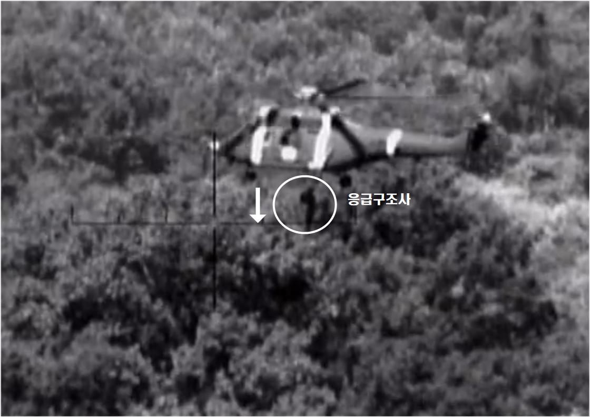
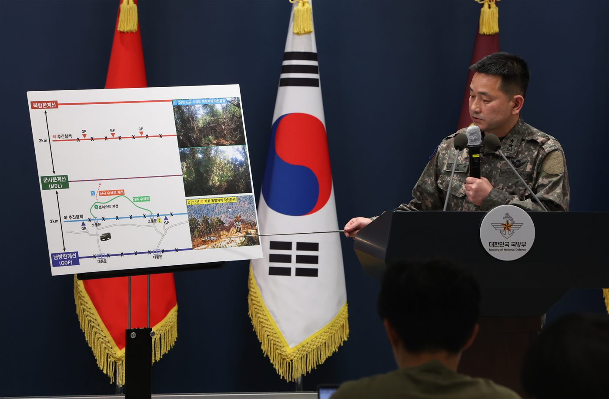
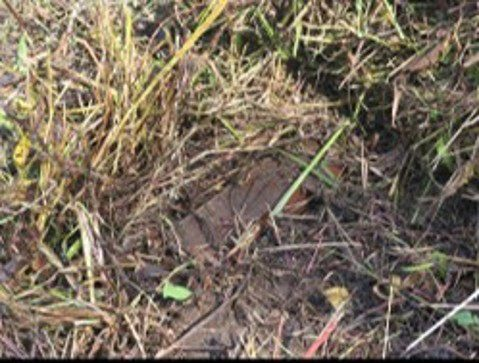
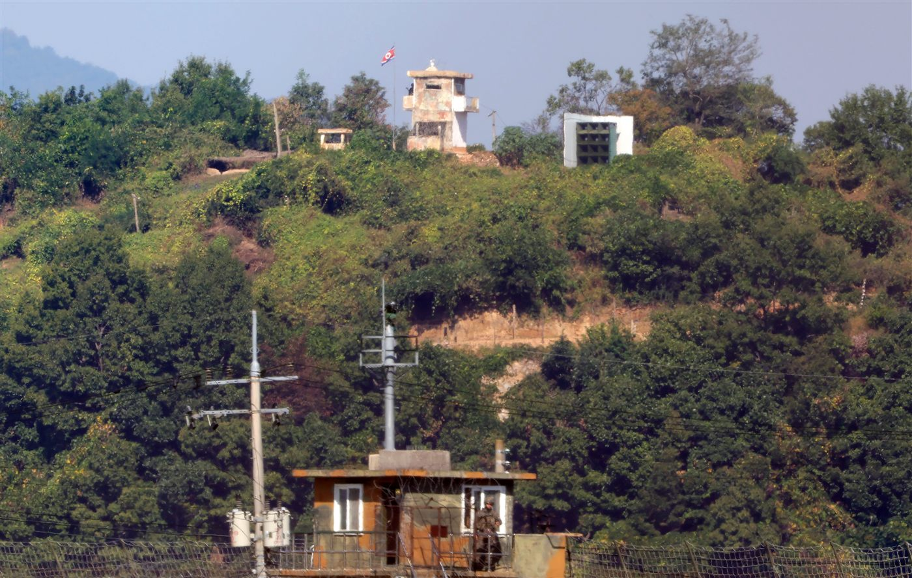
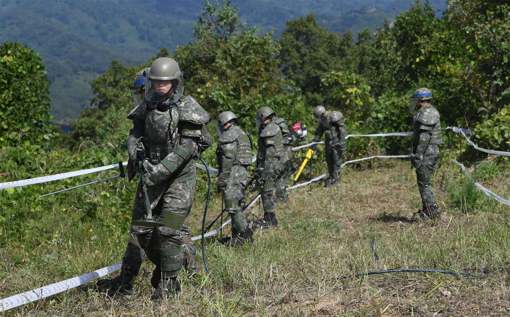
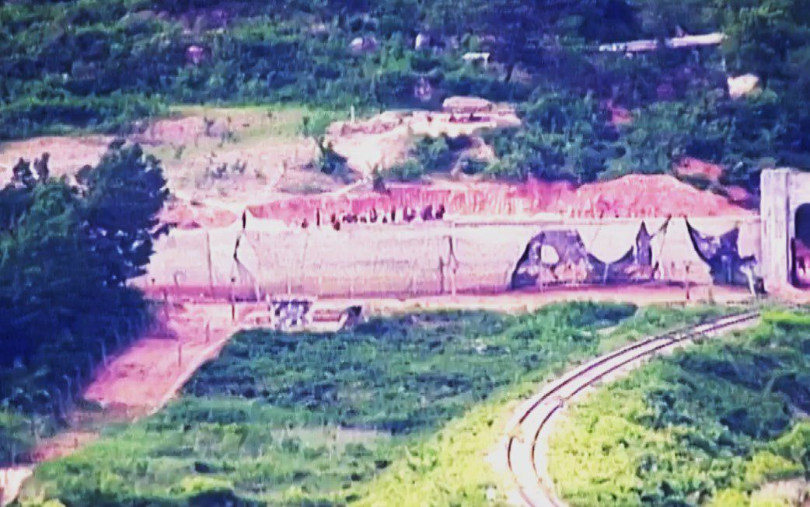

편집# 014
남방 2km 북방 2km이곳은 悲무장지대입니다
공개 자료를 토대로 재구성한 가상 공간입니다.
실제 군사시설·지뢰 위치와 일치하지 않습니다.
군사분계선(MDL)을 기준으로 남쪽 2km, 북쪽 2km. 폭 4km가 비무장지대(DMZ)입니다.
1953년 7월 27일
정전협정에 따라 군사분계선에서 남북 각 2km가 비무장지대로 설정됐습니다.
2026. 9. 21
서부전선 DMZ
정찰 임무 중 폭발 사고 발생
우리 군 3명 부상
이 가운데 2명 중상
헬기 접근 · 응급구조사 투입
9월 21일 사고 직후 구조 장면. 합동참모본부가 9월 28일 공개한 영상. (사진=합동참모본부 제공)


조사 결과
- 폭발 지점
- 인근 조사 구간
- 추가 발견 지뢰
- 현장조사
- MDL 남측에서 활성 북한제 대인지뢰 추가 확인
- 유엔사
- 정전협정 위반으로 판단
- 북한
- 조사 결과·책임 부인, 사과 요구 거부
※ 그래픽 속 지점은 실제 위치가 아닙니다.
합동 현장조사 · 발견 지뢰
합동 현장조사 때 발견된 북한 수지반보병지뢰. 2026년 9월 29일 공개 (사진=합동참모본부 제공)

1953. 7. 27정전협정 · DMZ의 원래 규정
- 남북 각 2km 비무장지대 설정
- 군대·장비 철수
- 알려진 지뢰밭 등 위험 요소 신고·제거
2024년부터북측 경계 작업
- 지뢰 매설
- 방벽 설치
- 전술도로 보강
2026. 9. 21폭발 · 합동 현장조사
- MDL 남측 활성 북한제 대인지뢰 추가 확인
- 유엔사, 정전협정 위반 판단
- 북한, 책임 부인·사과 요구 거부
지표 아래를 좌우로 움직여
살펴보세요마우스로 누르거나 터치해 시작
지표 아래
- 지뢰
- 미확인 폭발물
- 전사자 유해
2018년 DMZ에서는 전사자 유해발굴을 위한 지뢰 제거 작업이 진행됐습니다.
※ 위치와 수량을 나타낸 그림이 아닙니다.
0 km
군사분계선(MDL)
1953년 정전협정으로 설정
북측 경계 작업2024년부터
지뢰 매설·방벽 설치·전술도로 보강
2026. 9. 29 · 경기 파주 접경지역
우리 군 초소(아래)와 북한군 초소(위)가 마주보고 있다. ⓒ뉴시스 홍효식 기자

- 1953
- 2018
- 2024
- 2026
1953
비무장지대 설정정전협정
2018
GP 철수·지뢰 제거9·19 남북 군사합의
2024
북측 경계 작업 강화
2026. 9. 21
폭발 지점
2018. 10. 2 · 강원 철원 DMZ
육군이 비무장지대 수색로 일대에서 6·25 전사자 유해발굴을 위한 지뢰 제거 작업을 시작했다. ⓒ뉴시스 사진공동취재단

2024. 6. 18 · 중부전선 DMZ
DMZ 안에서 작업하는 북한군. 합동참모본부는 이날 작업 중이던 북한군 수십 명이 군사분계선을 침범했다가 경고방송·경고사격 뒤 북상했다고 밝혔다.

4km
이곳은비무장지대입니다.
원하는 거리에서 놓으면 본문으로 돌아갑니다